1。深度学习的构建模块
活动1.01:使用优化器求解二次方程
解决方案
让我们解下面的二次方程:

图1.29:待求解的二次方程
我们已经知道这个二次方程的解是x=5。
我们可以使用优化器来解决这个问题。对于优化器，x是变量，成本函数是左侧表达式，如下所示:

图1.30:左侧表达式
优化器将找到表达式最小的x的值——在本例中，它是0。请注意，这只适用于完全平方的二次方程，比如本例。左边的表达式是一个完美的正方形，可以用下面的等式来解释:
图1.31:完美的正方形
现在，让我们看看解决这个问题的代码:
- 打开一个新的Jupyter笔记本，将其重命名为 Activity 1.01 。
- 进口
tensorflow:import tensorflow as tf
- 创建变量
x并将其初始化为0.0:x=tf.Variable(0.0)
- 将
loss函数构造为lambda函数:loss=lambda:abs(x**2-10*x+25)
- 创建一个学习率为
.01:optimizer=tf.optimizers.Adam(.01)
的优化器实例 - 运行优化器10，000次迭代。您可以从一个较小的数字开始，比如1000，并不断增加迭代次数，直到您得到解决方案:
for i in range(10000): optimizer.minimize(loss,x)
- Print the value of
x:tf.print(x)
输出如下所示:
4.99919891
这是我们的二次方程的解。值得注意的是，不管迭代多少次，你都不会得到一个完美的5。
注意
要访问该特定部分的源代码，请参考https://packt.live/3gBTFGA的。
你也可以在https://packt.live/2Dqa2Id在线运行这个例子。您必须执行整个笔记本才能获得想要的结果。
2。神经网络
活动2.01:建立一个多层神经网络来对声纳信号进行分类
解决方案
让我们看看解决方案是什么样的。请记住，这是一种解决方案，但可能有多种变化:
- 导入所有需要的库:
import tensorflow as tf import pandas as pd from sklearn.preprocessing import LabelEncoder # Import Keras libraries from tensorflow.keras.models import Sequential from tensorflow.keras.layers import Dense
- Load and examine the data:
df = pd.read_csv('sonar.csv') df.head()输出是:
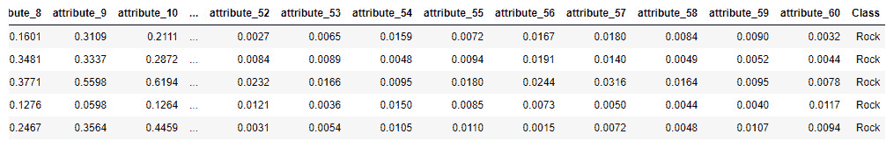图2.37:sonar . CSV的内容
观察有60个特征，目标有两个值—岩石和矿井。
这意味着这是一个二元分类问题。在建立神经网络之前，我们先准备好数据。
- Separate the features and the labels:
X_input = df.iloc[:, :-1] Y_label = df['Class'].values
在这段代码中，
X_input是选择除了Class列之外的所有列，Y_label只是选择了Class列。 - Labels are in text format. We need to encode them as numbers before we can use them with our model:
labelencoder_Y = LabelEncoder() Y_label = labelencoder_Y.fit_transform(Y_label) Y_label = Y_label.reshape([208, 1])
最后的
reshape函数会将标签转换成矩阵格式，这是模型所期望的。 - Build the multilayer model with Keras:
model = Sequential() model.add(Dense(300,input_dim=60, activation = 'relu')) model.add(Dense(200, activation = 'relu')) model.add(Dense(100, activation = 'relu')) model.add(Dense(1, activation = 'sigmoid'))
您可以试验层和神经元的数量，但最后一层只能有一个具有sigmoid激活函数的神经元，因为这是一个二元分类器。
- 设置训练参数:
model.compile(optimizer='adam',loss='binary_crossentropy', \ metrics=['accuracy'])
- Train the model:
model.fit(X_input, Y_label, epochs=30)
截断的输出将类似于以下内容:
Train on 208 samples Epoch 1/30 208/208 [==============================] - 0s 205us/sample - loss: 0.1849 - accuracy: 0.9038 Epoch 2/30 208/208 [==============================] - 0s 220us/sample – loss: 0.1299 - accuracy: 0.9615 Epoch 3/30 208/208 [==============================] - 0s 131us/sample – loss: 0.0947 - accuracy: 0.9856 Epoch 4/30 208/208 [==============================] - 0s 151us/sample – loss: 0.1046 - accuracy: 0.9712 Epoch 5/30 208/208 [==============================] - 0s 171us/sample – loss: 0.0952 - accuracy: 0.9663 Epoch 6/30 208/208 [==============================] - 0s 134us/sample – loss: 0.0777 - accuracy: 0.9856 Epoch 7/30 208/208 [==============================] - 0s 129us/sample – loss: 0.1043 - accuracy: 0.9663 Epoch 8/30 208/208 [==============================] - 0s 142us/sample – loss: 0.0842 - accuracy: 0.9712 Epoch 9/30 208/208 [==============================] - 0s 155us/sample – loss: 0.1209 - accuracy: 0.9423 Epoch 10/30 208/208 [==============================] - ETA: 0s - loss: 0.0540 - accuracy: 0.98 - 0s 334us/sample - los
- Let's evaluate the trained model and examine its accuracy:
model.evaluate(X_input, Y_label)
输出如下所示:
208/208 [==============================] - 0s 128us/sample – loss: 0.0038 - accuracy: 1.0000 [0.003758653004367191, 1.0]
正如你所看到的，我们已经能够成功地训练一个多层二进制神经网络，并在30个时期内获得100%的准确性。
注意
要访问该特定部分的源代码，请参考https://packt.live/38EMoDi。
你也可以在https://packt.live/2W2sygb在线运行这个例子。您必须执行整个笔记本才能获得想要的结果。
3。基于卷积神经网络的图像分类
活动3.01:基于时尚MNIST数据集构建一个M 多类分类器
解决方案
- 打开新的Jupyter笔记本。
- 导入
tensorflow.keras.datasets.fashion_mnist:from tensorflow.keras.datasets import fashion_mnist
- 使用
fashion_mnist.load_data()加载时尚MNIST数据集，并将结果保存到(features_train, label_train), (features_test, label_test):(features_train, label_train), (features_test, label_test) = \ fashion_mnist.load_data()
- Print the shape of the training set:
features_train.shape
输出如下所示:
(60000, 28, 28)
训练集由尺寸为
28乘28的60000幅图像组成。我们需要重塑它，增加渠道维度。 - Print the shape of the testing set:
features_test.shape
输出如下所示:
(10000, 28, 28)
测试集由尺寸为
28乘28的10000幅图像组成。我们需要重塑它，并增加渠道维度 - 用尺寸
(number_rows, 28, 28, 1):features_train = features_train.reshape(60000, 28, 28, 1) features_test = features_test.reshape(10000, 28, 28, 1)
重塑训练集和测试集 - 创建三个名为
batch_size、img_height和img_width的变量，分别取值为16、28和28:batch_size = 16 img_height = 28 img_width = 28
- 从
tensorflow.keras.preprocessing导入ImageDataGenerator:from tensorflow.keras.preprocessing.image \ import ImageDataGenerator
- 创建一个名为
train_img_gen的ImageDataGenerator，并增加数据:rescale=1./255, rotation_range=40, width_shift_range=0.1, height_shift_range=0.1, shear_range=0.2, zoom_range=0.2, horizontal_flip=True, fill_mode='nearest':train_img_gen = ImageDataGenerator(rescale=1./255, \ rotation_range=40, \ width_shift_range=0.1, \ height_shift_range=0.1, \ shear_range=0.2, \ zoom_range=0.2, \ horizontal_flip=True, \ fill_mode='nearest')
- 创建一个名为
val_img_gen的ImageDataGenerator，并重新缩放(除以255):val_img_gen = ImageDataGenerator(rescale=1./255)
- 使用
.flow()创建一个名为train_data_gen的数据生成器，并从训练集中指定批量大小、特性和标签:train_data_gen = train_img_gen.flow(features_train, \ label_train, \ batch_size=batch_size)
- 使用
.flow()创建一个名为val_data_gen的数据生成器，并从测试集中指定批量大小、特性和标签:val_data_gen = train_img_gen.flow(features_test, \ label_test, \ batch_size=batch_size)
- 将
numpy导入为np，将tensorflow导入为tf，将layers从tensorflow.keras:import numpy as np import tensorflow as tf from tensorflow.keras import layers
导入 - 使用
np.random_seed()和tf.random.set_seed():np.random.seed(8) tf.random.set_seed(8)
将8设置为numpy和tensorflow的种子 - Instantiate a
tf.keras.Sequential()class into a variable calledmodelwith the following layers: A convolution layer with64kernels of shape3,ReLUas the activation function, and the necessary input dimensions; a max pooling layer; a convolution layer with128kernels of shape3andReLUas the activation function; a max pooling layer; a flatten layer; a fully connected layer with128units andReLUas the activation function; a fully connected layer with10units andsoftmaxas the activation function.代码应该如下所示:
model = tf.keras.Sequential\ ([layers.Conv2D(64, 3, activation='relu', \ input_shape=(img_height, \ img_width ,1)), \ layers.MaxPooling2D(), \ layers.Conv2D(128, 3, \ activation='relu'), \ layers.MaxPooling2D(),\ layers.Flatten(), \ layers.Dense(128, \ activation='relu'), \ layers.Dense(10, \ activation='softmax')]) - 用
0.001作为学习率实例化一个tf.keras.optimizers.Adam()类，并将其保存到一个名为optimizer = tf.keras.optimizers.Adam(0.001)
的变量中 - 使用
.compile()和loss='sparse_categorical_crossentropy', optimizer=optimizer, metrics=['accuracy']:model.compile(loss='sparse_categorical_crossentropy', \ optimizer=optimizer, metrics=['accuracy'])
编译神经网络 - Fit the neural networks with
fit_generator()and provide the train and validation data generators,epochs=5, the steps per epoch, and the validation steps:model.fit_generator(train_data_gen, \ steps_per_epoch=len(features_train) \ // batch_size, \ epochs=5, \ validation_data=val_data_gen, \ validation_steps=len(features_test) \ // batch_size)预期产出如下:
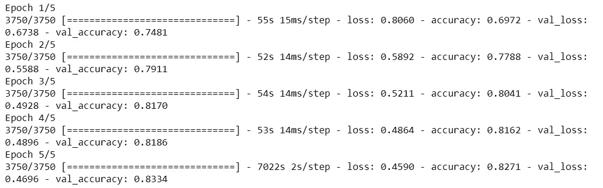
图3.30:模型训练日志
我们在五个时期上训练我们的CNN，并且我们分别在训练集和验证集上获得了0.8271和0.8334的准确度分数。我们的模型没有过度拟合，并取得了相当高的分数。五个历元之后，准确度仍在增加，所以如果我们继续训练它，我们可能会得到更好的结果。这是你可以自己尝试的。
注意
要访问该特定部分的源代码，请参考https://packt.live/2ObmA8t。
你也可以在https://packt.live/3fiyyJi在线运行这个例子。您必须执行整个笔记本才能获得想要的结果。
活动3.02:利用迁移学习进行水果分类
解决方案
- 打开新的Jupyter笔记本。
- 将
tensorflow导入为tf:import tensorflow as tf
- Create a variable called
file_urlcontaining the link to the dataset:file_url = 'https://github.com/PacktWorkshops'\ '/The-Deep-Learning-Workshop'\ '/raw/master/Chapter03/Datasets/Activity3.02'\ '/fruits360.zip'注意
在上述步骤中，我们使用存储在https://packt.live/3eePQ8G的数据集。如果您已经在任何其他URL存储了数据集，请相应地更改突出显示的路径。
- 使用带有
'fruits360.zip', origin=file_url, extract=True的tf.keras.get_file下载数据集，并将结果保存到名为zip_dir:zip_dir = tf.keras.utils.get_file('fruits360.zip', \ origin=file_url, \ extract=True)的变量中 - 导入
pathlib库:import pathlib
- 使用
pathlib.Path(zip_dir).parent:path = pathlib.Path(zip_dir).parent / 'fruits360_filtered'
创建一个名为path的变量，包含到fruits360_filtered目录的完整路径 - 创建两个名为
train_dir和validation_dir的变量，它们分别获取火车(Training)和验证(Test)文件夹的完整路径:train_dir = path / 'Training' validation_dir = path / 'Test'
- 创建两个名为
total_train和total_val的变量，它们将获得训练集和验证集的图像数量，即11398和4752:total_train = 11398 total_val = 4752
- 从
tensorflow.keras.preprocessing导入ImageDataGenerator:from tensorflow.keras.preprocessing.image \ import ImageDataGenerator
- 创建一个名为
train_img_gen的ImageDataGenerator并增加数据:rescale=1./255, rotation_range=40, width_shift_range=0.1, height_shift_range=0.1, shear_range=0.2, zoom_range=0.2, horizontal_flip=True, fill_mode='nearest':train_img_gen = ImageDataGenerator(rescale=1./255, \ rotation_range=40, \ width_shift_range=0.1, \ height_shift_range=0.1, \ shear_range=0.2, \ zoom_range=0.2, \ horizontal_flip=True, \ fill_mode='nearest')
- 创建一个名为
val_img_gen的ImageDataGenerator，并进行重新调整(除以255):val_img_gen = ImageDataGenerator(rescale=1./255)
- 创建四个名为
batch_size、img_height、img_width和channel的变量，分别取值为16、100、100和3:batch_size=16 img_height = 100 img_width = 100 channel = 3
- 使用
.flow_from_directory()创建一个名为train_data_gen的数据生成器，并指定批量大小、培训文件夹和目标大小:train_data_gen = train_image_generator.flow_from_directory\ (batch_size=batch_size, \ directory=train_dir, \ target_size=(img_height, img_width))
- 使用
.flow_from_directory()创建一个名为val_data_gen的数据生成器，并指定批量大小、验证文件夹和目标大小:val_data_gen = validation_image_generator.flow_from_directory\ (batch_size=batch_size, \ directory=validation_dir, \ target_size=(img_height, img_width))
- 导入
numpy为np，tensorflow为tf，从tensorflow.keras:import numpy as np import tensorflow as tf from tensorflow.keras import layers
导入layers - 使用
np.random_seed()和tf.random.set_seed():np.random.seed(8) tf.random.set_seed(8)
将8设置为numpy和tensorflow的种子 - 从
tensorflow.keras.applications导入VGG16:from tensorflow.keras.applications import VGG16
- 用以下参数将一个
VGG16模型实例化为一个名为base_model的变量:base_model = VGG16(input_shape=(img_height, \ img_width, channel), \ weights='imagenet', \ include_top=False)
- 使用
.trainable属性:base_model.trainable = False
将该模型设置为不可训练 - Print the summary of this
VGG16model:base_model.summary()
预期产出如下:
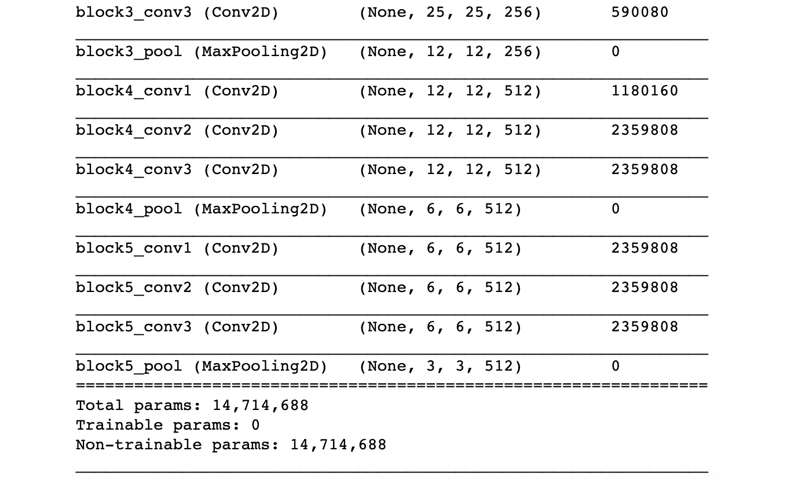图3.31:模型摘要
这个输出向我们展示了
VGG16的架构。我们可以看到总共有14,714,688个参数，但是没有可训练的参数。这是意料之中的，因为我们已经冻结了这个模型的所有层。 - 使用
tf.keras.Sequential()创建一个新模型，将基础模型添加到以下层:Flatten()、Dense(1000, activation='relu')和Dense(120, activation='softmax')。将这个模型保存到一个名为model:model = tf.keras.Sequential([base_model, \ layers.Flatten(), \ layers.Dense(1000, \ activation='relu'), \ layers.Dense(120, \ activation='softmax')])
的变量中 - 用
0.001作为学习率实例化一个tf.keras.optimizers.Adam()类，并保存到一个名为optimizer:optimizer = tf.keras.optimizers.Adam(0.001)
的变量中 - 使用
.compile()和loss='categorical_crossentropy', optimizer=optimizer, metrics=['accuracy']:model.compile(loss='categorical_crossentropy', \ optimizer=optimizer, metrics=['accuracy'])
编译神经网络 - Fit the neural networks with
fit_generator()and provide the train and validation data generators,epochs=5, the steps per epoch, and the validation steps. This model may take a few minutes to train:model.fit_generator(train_data_gen, \ steps_per_epoch=len(features_train) \ // batch_size, \ epochs=5, \ validation_data=val_data_gen, \ validation_steps=len(features_test) \ // batch_size)预期产出如下:
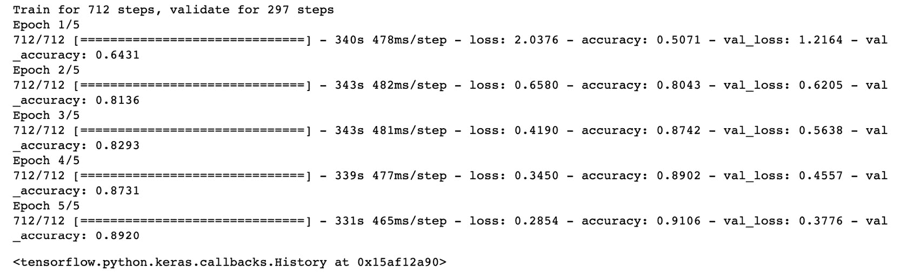
图3.32:预期产出
在这里，我们使用迁移学习在ImageNet上定制一个预训练的VGG16模型，以便它适合我们的水果分类数据集。我们用我们自己的完全连接的层替换了模型的头部，并在五个时期训练这些层。我们在训练集和测试集上分别获得了0.9106和0.8920的准确率。考虑到训练这个模型所用的时间和硬件，这些是非常显著的结果。你可以尝试微调这个模型，看看你是否能取得更好的成绩。
注意
要访问该特定部分的源代码，请参考https://packt.live/2DsVRCl。
本节目前没有在线交互示例，需要在本地运行。
4。文本嵌入的深度学习
活动4.01:文本预处理“爱丽丝梦游仙境”文本
解决方案
您需要执行以下步骤:
注意
在开始本活动之前，确保您已经定义了alice_raw变量，如标题为使用NLTK 下载文本语料库一节中所示。
- 把数据改成小写，分成句子:
txt_sents = tokenize.sent_tokenize(alice_raw.lower())
- 给句子做记号:
txt_words = [tokenize.word_tokenize(sent) for sent in txt_sents]
- 从
string模块导入punctuation，从NLTK:from string import punctuation stop_punct = list(punctuation) from nltk.corpus import stopwords stop_nltk = stopwords.words("english")导入stopwords - 创建一个保存上下文停用词
--和said:stop_context = ["--", "said"]
的变量 - 为停用字词创建一个主列表，以删除包含标点符号、NLTK停用字词和上下文停用字词的字词:
stop_final = stop_punct + stop_nltk + stop_context
- 定义一个函数，从任何输入句子中删除这些标记(标记化的):
def drop_stop(input_tokens): return [token for token in input_tokens \ if token not in stop_final]
- Remove the terms in
stop_finalfrom the tokenized text:alice_words_nostop = [drop_stop(sent) for sent in txt_words] print(alice_words_nostop[:2])
前两句话是这样的:
[['alice', "'s", 'adventures', 'wonderland', 'lewis', 'carroll', '1865', 'chapter', 'i.', 'rabbit-hole', 'alice', 'beginning', 'get', 'tired', 'sitting', 'sister', 'bank', 'nothing', 'twice', 'peeped', 'book', 'sister', 'reading', 'pictures', 'conversations', "'and", 'use', 'book', 'thought', 'alice', "'without", 'pictures', 'conversation'], ['considering', 'mind', 'well', 'could', 'hot', 'day', 'made', 'feel', 'sleepy', 'stupid', 'whether', 'pleasure', 'making', 'daisy-chain', 'would', 'worth', 'trouble', 'getting', 'picking', 'daisies', 'suddenly', 'white', 'rabbit', 'pink', 'eyes', 'ran', 'close']]
- Using the
PorterStemmeralgorithm from NLTK, perform stemming on the result. Print out the first five sentences of the result:from nltk.stem import PorterStemmer stemmer_p = PorterStemmer() alice_words_stem = [[stemmer_p.stem(token) for token in sent] \ for sent in alice_words_nostop] print(alice_words_stem[:5])输出如下所示:
[['alic', "'s", 'adventur', 'wonderland', 'lewi', 'carrol', '1865', 'chapter', 'i.', 'rabbit-hol', 'alic', 'begin', 'get', 'tire', 'sit', 'sister', 'bank', 'noth', 'twice', 'peep', 'book', 'sister', 'read', 'pictur', 'convers', "'and", 'use', 'book', 'thought', 'alic', "'without", 'pictur', 'convers'], ['consid', 'mind', 'well', 'could', 'hot', 'day', 'made', 'feel', 'sleepi', 'stupid', 'whether', 'pleasur', 'make', 'daisy-chain', 'would', 'worth', 'troubl', 'get', 'pick', 'daisi', 'suddenli', 'white', 'rabbit', 'pink', 'eye', 'ran', 'close'], ['noth', 'remark', 'alic', 'think', 'much', 'way', 'hear', 'rabbit', 'say', "'oh", 'dear'], ['oh', 'dear'], ['shall', 'late']]
注意
要访问该特定部分的源代码，请参考https://packt.live/2VVNEgf的。
你也可以在https://packt.live/38Gr54r在线运行这个例子。您必须执行整个笔记本才能获得想要的结果。
活动4.02:爱丽丝梦游仙境的文本展示
解决方案
您需要执行以下步骤:
- From Activity 4.01, Text Preprocessing Alice in Wonderland, print the first three sentences from the result after stop word removal. This is the data you will work with:
print(alice_words_nostop[:3])
输出如下所示:
[['alice', "'s", 'adventures', 'wonderland', 'lewis', 'carroll', '1865', 'chapter', 'i.', 'rabbit-hole', 'alice', 'beginning', 'get', 'tired', 'sitting', 'sister', 'bank', 'nothing', 'twice', 'peeped', 'book', 'sister', 'reading', 'pictures', 'conversations', "'and", 'use', 'book', 'thought', 'alice', "'without", 'pictures', 'conversation'], ['considering', 'mind', 'well', 'could', 'hot', 'day', 'made', 'feel', 'sleepy', 'stupid', 'whether', 'pleasure', 'making', 'daisy-chain', 'would', 'worth', 'trouble', 'getting', 'picking', 'daisies', 'suddenly', 'white', 'rabbit', 'pink', 'eyes', 'ran', 'close'], ['nothing', 'remarkable', 'alice', 'think', 'much', 'way', 'hear', 'rabbit', 'say', "'oh", 'dear']]
- 从Gensim导入
word2vec并用默认参数训练你的单词嵌入:from gensim.models import word2vec model = word2vec.Word2Vec(alice_words_nostop)
- Find the
5terms most similar torabbit:model.wv.most_similar("rabbit", topn=5)输出如下所示:
[('alice', 0.9963310360908508), ('little', 0.9956872463226318), ('went', 0.9955698251724243), ("'s", 0.9955658912658691), ('would', 0.9954401254653931)] - 使用
window大小的2，重新训练单词向量:model = word2vec.Word2Vec(alice_words_nostop, window=2)
- Find the terms most similar to
rabbit:model.wv.most_similar("rabbit", topn=5)输出如下所示:
[('alice', 0.9491485357284546), ("'s", 0.9364748001098633), ('little', 0.9345826506614685), ('large', 0.9341927170753479), ('duchess', 0.9341296553611755)] - 使用Skip-gram方法重新训练单词向量，窗口大小为
5:model = word2vec.Word2Vec(alice_words_nostop, window=5, sg=1)
- Find the terms most similar to
rabbit:model.wv.most_similar("rabbit", topn=5)输出如下所示:
[('gardeners', 0.9995723366737366), ('end', 0.9995588064193726), ('came', 0.9995309114456177), ('sort', 0.9995298385620117), ('upon', 0.9995272159576416)] - 通过对
white和rabbit:v1 = model.wv['white'] v2 = model.wv['rabbit'] res1 = (v1+v2)/2
的向量求平均值，找到短语white rabbit的表示 - 通过对
mad和hatter:v1 = model.wv['mad'] v2 = model.wv['hatter'] res2 = (v1+v2)/2
的向量求平均值，找到mad hatter的表示 - Find the cosine similarity between these two phrases:
model.wv.cosine_similarities(res1, [res2])
这为我们提供了以下值:
array([0.9996213], dtype=float32)
- 使用格式化的键控向量加载尺寸为100D的预训练手套嵌入:
from gensim.models.keyedvectors import KeyedVectors glove_model = KeyedVectors.load_word2vec_format\ ("glove.6B.100d.w2vformat.txt", binary=False) - 查找
white rabbit和mad hatter的表示:v1 = glove_model['white'] v2 = glove_model['rabbit'] res1 = (v1+v2)/2 v1 = glove_model['mad'] v2 = glove_model['hatter'] res2 = (v1+v2)/2
- Find the
cosinesimilarity between the two phrases. Has the cosine similarity changed?glove_model.cosine_similarities(res1, [res2])
以下是上述代码的输出:
array([0.4514577], dtype=float32)
在这里，我们可以看到两个短语“mad hatter”和“white rabbit”之间的余弦相似度远远低于手套模型。这是因为手套模型在其训练数据中没有像在书中那样多地看到这些术语。在这本书里，mad和hatter这两个词出现了很多次，因为它们构成了一个重要角色的名字。当然，在其他情况下，我们不会经常看到mad和hatter在一起。
注意
要访问该特定部分的源代码，请参考https://packt.live/2VVNEgf。
本节目前没有在线交互示例，需要在本地运行。
5。序列的深度学习
活动5.01:使用简单的RNN模型预测IBM的股票价格
解
- Import the necessary libraries, load the
.csvfile, reverse the index, and plot the time series (theClosecolumn) for visual inspection:import pandas as pd, numpy as np import matplotlib.pyplot as plt inp0 = pd.read_csv("IBM.csv") inp0 = inp0.sort_index(ascending=False) inp0.plot("Date", "Close") plt.show()输出如下，收盘价绘制在 Y轴上:
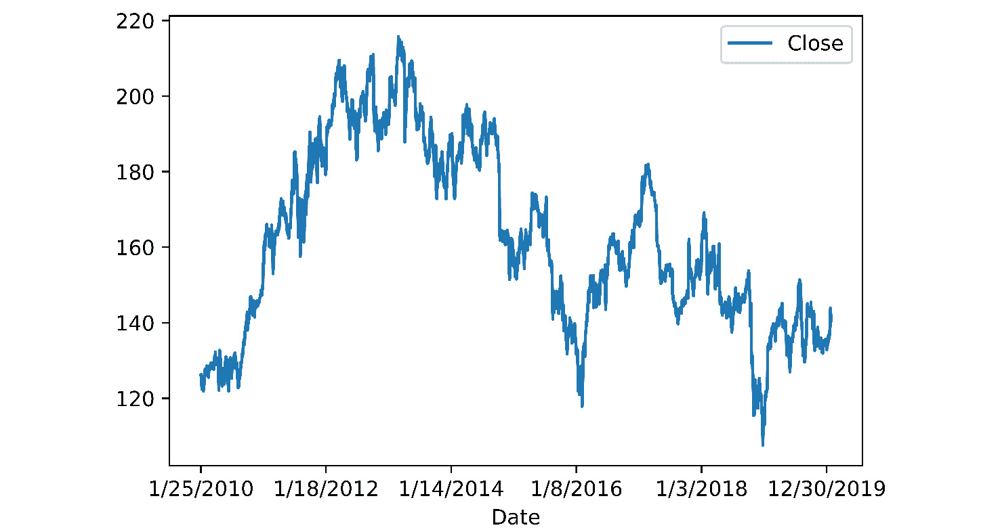图5.40:IBM股票价格的趋势
- Extract the values for
Closefrom the DataFrame as anumpyarray and plot them usingmatplotlib:ts_data = inp0.Close.values.reshape(-1,1) plt.figure(figsize=[14,5]) plt.plot(ts_data) plt.show()
结果趋势如下，指数绘制在 X轴上:
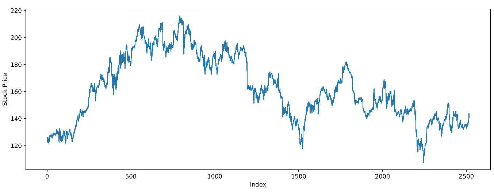图5.41:可视化的股票价格数据
- Assign the final 25% data as test data and the first 75% as train data:
train_recs = int(len(ts_data) * 0.75) train_data = ts_data[:train_recs] test_data = ts_data[train_recs:] len(train_data), len(test_data)
输出如下所示:
(1888, 630)
- 使用
sklearn中的MinMaxScaler，缩放训练和测试数据:from sklearn.preprocessing import MinMaxScaler scaler = MinMaxScaler() train_scaled = scaler.fit_transform(train_data) test_scaled = scaler.transform(test_data)
- Using the
get_lookbackfunction we defined earlier in this chapter (refer to the Preparing the Data for Stock Price Prediction section), get the lookback data for the train and test sets using a lookback period of 10:look_back = 10 trainX, trainY = get_lookback(train_scaled, look_back=look_back) testX, testY = get_lookback(test_scaled, look_back= look_back) trainX.shape, testX.shape
输出如下所示:
((1888, 10), (630, 10))
- 从Keras中，导入使用普通rnn(
SimpleRNN、Activation、Dropout、Dense和Reshape)和1D卷积(Conv1D)所需的所有层。另外，从sklearn:from tensorflow.keras.models import Sequential from tensorflow.keras.layers import SimpleRNN, Activation, Dropout, Dense, Reshape, Conv1D from sklearn.metrics import mean_squared_error
导入mean_squared_error指标 - Build a model with a 1D convolution layer (5 filters of size 3) and an RNN layer with 32 neurons. Add 25% dropout after the RNN layer. Print the model's summary:
model_comb = Sequential() model_comb.add(Reshape((look_back,1), \ input_shape = (look_back,))) model_comb.add(Conv1D(5, 3, activation='relu')) model_comb.add(SimpleRNN(32)) model_comb.add(Dropout(0.25)) model_comb.add(Dense(1)) model_comb.add(Activation('linear')) model.summary()输出如下所示:

图5.42:模型总结
- Compile the model with the
mean_squared_errorloss and theadamoptimizer. Fit this on the train data in five epochs, with a validation split of 10% and a batch size of 1:model_comb.compile(loss='mean_squared_error', \ optimizer='adam') model_comb.fit(trainX, trainY, epochs=5, \ batch_size=1, verbose=2, \ validation_split=0.1)输出如下所示:
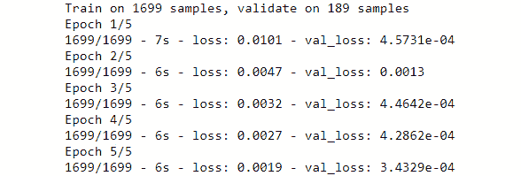图5.43:培训和验证损失
- Using the
get_model_perfmethod, print the RMSE of the model:get_model_perf(model_comb)
输出如下所示:
Train RMSE: 0.03 RMSE Test RMSE: 0.03 RMSE
- Plot the predictions – the entire view, as well as the zoomed-in view:
%matplotlib notebook plt.figure(figsize=[10,5]) plot_pred(model_comb)
我们应该会看到下面的预测图(虚线)和实际图(实线):
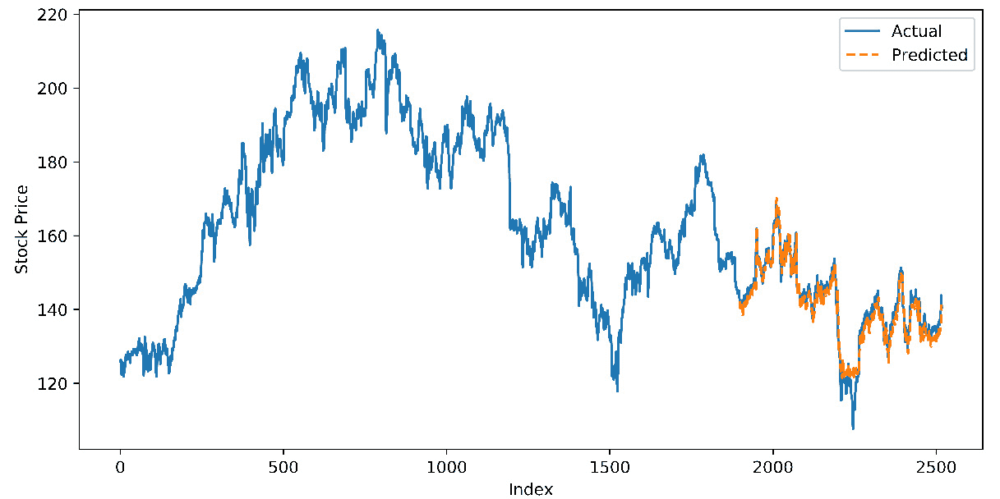
图5.44:预测与实际
放大后的视图如下:
图5.45:预测值(虚线)与实际值(实线)-详细视图
我们可以看到，该模型在捕捉更精细的模式方面做得很好，并且在预测每日股票价格方面做得非常好。
注意
要访问该特定部分的源代码，请参考https://packt.live/2ZctArW。
你也可以在https://packt.live/38EDOEA在线运行这个例子。您必须执行整个笔记本才能获得想要的结果。
6。LSTMs、gru和高级rnn
活动6.01:亚马逊产品评论的情感分析
解决方案
- Read in the data files for the
trainandtestsets. Examine the shapes of the datasets and print out the top5records from thetraindata:import pandas as pd, numpy as np import matplotlib.pyplot as plt %matplotlib inline train_df = pd.read_csv("Amazon_reviews_train.csv") test_df = pd.read_csv("Amazon_reviews_test.csv") print(train_df.shape, train_df.shape) train_df.head(5)数据集的形状和标题如下:
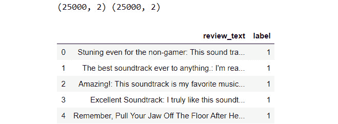图6.26:训练数据集中的前五条记录
- For convenience, when it comes to processing, separate the raw text and the labels for the
trainandtestsets. You should have4variables, as follows:train_rawcomprising raw text for the train data,train_labelswith labels for the train data,test_rawcontaining raw text for the test data, andtest_labelscomprising Labels for the test data. Print the first two reviews from thetraintext.train_raw = train_df.review_text.values train_labels = train_df.label.values test_raw = test_df.review_text.values test_labels = test_df.label.values train_raw[:2]
上述代码会产生以下输出:
图6.27:来自训练数据集的原始文本
- Normalize the case and tokenize the test and train texts using NLTK's
word_tokenize(after importing it, of course – hint: use a list comprehension for cleaner code). Downloadpunktfromnltkif you haven't used the tokenizer before. Print the first review from the train data to check if the tokenization worked.import nltk nltk.download('punkt') from nltk.tokenize import word_tokenize train_tokens = [word_tokenize(review.lower()) \ for review in train_raw] test_tokens = [word_tokenize(review.lower()) \ for review in test_raw] print(train_tokens[0])标记化的数据打印如下:
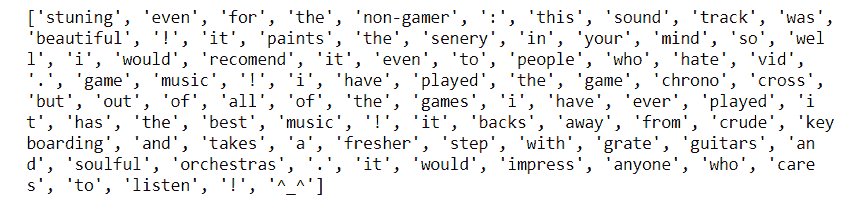图6.28:来自
train数据集的标记化检查 - 从字符串模块导入任何停用词(内置于NLTK)和标点符号。定义一个函数(
drop_stop)从任何输入的标记化句子中删除这些标记。从NLTK下载stopwords如果你以前没用过:from string import punctuation stop_punct = list(punctuation) nltk.download("stopwords") from nltk.corpus import stopwords stop_nltk = stopwords.words("english") stop_final = stop_punct + stop_nltk def drop_stop(input_tokens): return [token for token in input_tokens \ if token not in stop_final] - Using the defined function (
drop_stop), remove the redundant stop words from thetrainand thetesttexts. Print the first review of the processedtraintexts to check whether the function worked:train_tokens_no_stop = [drop_stop(sent) \ for sent in train_tokens] test_tokens_no_stop = [drop_stop(sent) \ for sent in test_tokens] print(train_tokens_no_stop[0])我们将得到以下输出:
['stuning', 'even', 'non-gamer', 'sound', 'track', 'beautiful', 'paints', 'senery', 'mind', 'well', 'would', 'recomend', 'even', 'people', 'hate', 'vid', 'game', 'music', 'played', 'game', 'chrono', 'cross', 'games', 'ever', 'played', 'best', 'music', 'backs', 'away', 'crude', 'keyboarding', 'takes', 'fresher', 'step', 'grate', 'guitars', 'soulful', 'orchestras', 'would', 'impress', 'anyone', 'cares', 'listen', '^_^']
- Using
PorterStemmerfrom NLTK, stem the tokens for both thetrainandtestdata:from nltk.stem import PorterStemmer stemmer_p = PorterStemmer() train_tokens_stem = [[stemmer_p.stem(token) for token in sent] \ for sent in train_tokens_no_stop] test_tokens_stem = [[stemmer_p.stem(token) for token in sent] \ for sent in test_tokens_no_stop] print(train_tokens_stem[0])结果应该打印如下:
['stune', 'even', 'non-gam', 'sound', 'track', 'beauti', 'paint', 'seneri', 'mind', 'well', 'would', 'recomend', 'even', 'peopl', 'hate', 'vid', 'game', 'music', 'play', 'game', 'chrono', 'cross', 'game', 'ever', 'play', 'best', 'music', 'back', 'away', 'crude', 'keyboard', 'take', 'fresher', 'step', 'grate', 'guitar', 'soul', 'orchestra', 'would', 'impress', 'anyon', 'care', 'listen', '^_^']
- Create the strings for each of the
trainandtextreviews. This will help us work with the utilities in Keras to create and pad the sequences. Create thetrain_textsandtest_textsvariables. Print the first review from the processedtraindata to confirm this:train_texts = [" ".join(txt) for txt in train_tokens_stem] test_texts = [" ".join(txt) for txt in test_tokens_stem] print(train_texts[0])
上述代码的结果如下:
stune even non-gam sound track beauti paint seneri mind well would recommend even peopl hate vid game music play game chrono cross game ever play best music back away crude keyboard take fresher step grate guitar soul orchestra would impress anyon care listen ^_^
- 从Keras的文本预处理工具(
keras.preprocessing.text，导入Tokenizer模块。定义一个词汇大小10000，并用这个词汇实例化标记器:from tensorflow.keras.preprocessing.text import Tokenizer vocab_size = 10000 tok = Tokenizer(num_words=vocab_size)
- Fit the tokenizer on the
traintexts. This works just likeCountVectorizerdid in Chapter 4, Deep Learning for Text – Embeddings, and trains the vocabulary. After fitting, use thetexts_to_sequencesmethod of the tokenizer on thetrainandtestsets to create the sequences for them. Print the sequence for the first review in the train data:tok.fit_on_texts(train_texts) train_sequences = tok.texts_to_sequences(train_texts) test_sequences = tok.texts_to_sequences(test_texts) print(train_sequences[0])
编码序列如下:
[22, 514, 7161, 85, 190, 184, 1098, 283, 20, 11, 1267, 22, 56, 370, 9682, 114, 41, 71, 114, 8166, 1455, 114, 51, 71, 29, 41, 58, 182, 2931, 2153, 75, 8167, 816, 2666, 829, 719, 3871, 11, 483, 120, 268, 110]
- We need to find the optimal length of the sequences to process the model. Get the length of the reviews from the
trainset into a list and plot a histogram of the lengths:seq_lens = [len(seq) for seq in train_sequences] plt.hist(seq_lens) plt.show()
长度分布如下:
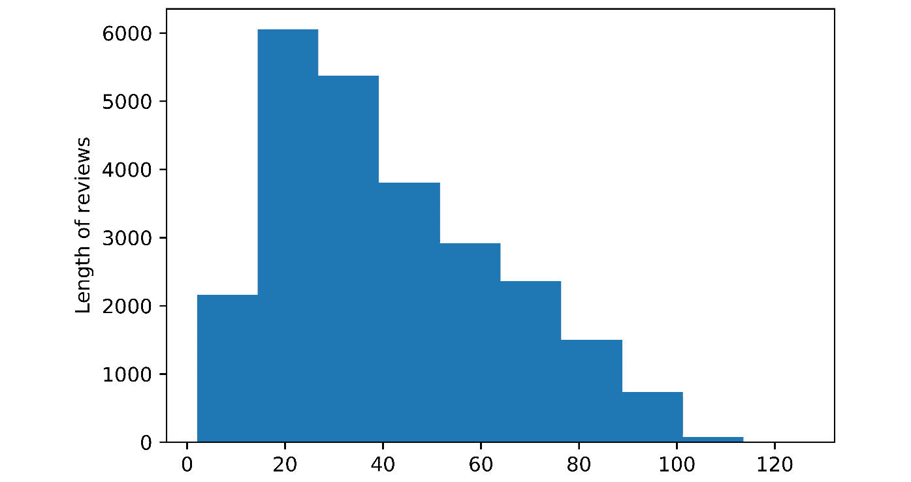图6.29:文本长度直方图
- The data is now in the same format as the IMDb data we used in this chapter. Using a sequence length of
100(define themaxlen = 100variable), use thepad_sequencesmethod from thesequencemodule in Keras' preprocessing utilities (keras.preprocessing.sequence) to limit the sequences to100for both thetrainandtestdata. Check the shape of the result for the train data:maxlen = 100 from tensorflow.keras.preprocessing.sequence import pad_sequences X_train = pad_sequences(train_sequences, maxlen=maxlen) X_test = pad_sequences(test_sequences, maxlen=maxlen) X_train.shape
形状如下:
(25000, 100)
- 要构建模型，从Keras (
embedding、spatial dropout、LSTM、dropout和dense)导入所有必要的层，并导入Sequential模型。初始化Sequential模型:from tensorflow.keras.models import Sequential from tensorflow.keras.layers import Dense, Embedding, SpatialDropout1D, Dropout, GRU, LSTM model_lstm = Sequential()
- 添加一个
32为矢量大小的嵌入图层(output_dim)。添加一个40%:model_lstm.add(Embedding(vocab_size, output_dim=32)) model_lstm.add(SpatialDropout1D(0.4))
的空间缺失 - 建立一个堆叠的LSTM模型，每层有
2个T21单元。用40%dropout:model_lstm.add(LSTM(64, return_sequences=True)) model_lstm.add(LSTM(64, return_sequences=False)) model_lstm.add(Dropout(0.4))
添加一个dropout层 - 添加一个带有激活
relu的32神经元的密集层，然后是一个50%脱落层，接着是另一个带有激活relu的32神经元的密集层，接着是另一个带有50%脱落的脱落层:model_lstm.add(Dense(32, activation='relu')) model_lstm.add(Dropout(0.5)) model_lstm.add(Dense(32, activation='relu')) model_lstm.add(Dropout(0.5))
- Add a final dense layer with a single neuron with
sigmoidactivationand compile the model. Print the model summary:model_lstm.add(Dense(1, activation='sigmoid')) model_lstm.compile(loss='binary_crossentropy', \ optimizer='rmsprop', \ metrics=['accuracy']) model_lstm.summary()该模型的概要如下:
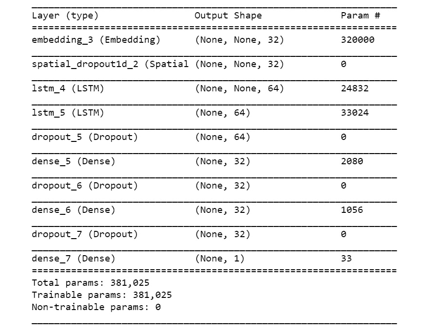图6.30:堆叠LSTM模型摘要
- Fit the model on the training data with a
20%validation split and a batch size of128. Train for5epochs:history_lstm = model_lstm.fit(X_train, train_labels, \ batch_size=128, \ validation_split=0.2, \ epochs = 5)我们将获得以下培训输出:

图6.31:堆叠LSTM模型训练输出
- Make a prediction on the test set using the
predict_classesmethod of the model. Then, print out the confusion matrix:from sklearn.metrics import accuracy_score, confusion_matrix test_pred = model_lstm.predict_classes(X_test) print(confusion_matrix(test_labels, test_pred))
我们将得到以下结果:
[[10226, 1931], [ 1603, 11240]]
- Using the
accuracy_scoremethod fromscikit-learn, calculate the accuracy of the test set.print(accuracy_score(test_labels, test_pred))
我们得到的精度是:
0.85864
正如我们所看到的，准确度分数在86%左右，并且查看混淆矩阵(步骤18 的输出),该模型很好地预测了两个类别。我们没有做任何超参数调整就获得了这种精度。您可以调整超参数以获得更高的精度。
注意
要访问该特定部分的源代码，请参考https://packt.live/3fpo0YI。
你也可以在https://packt.live/2Wi75QH在线运行这个例子。您必须执行整个笔记本才能获得想要的结果。
7。生成对抗网络
活动7.01:为MNIST时装数据集实施DCGAN
解决方案
- 打开一个新的Jupyter笔记本，命名为
Activity 7.01。导入以下库包:# Import the required library functions import numpy as np import matplotlib.pyplot as plt from matplotlib import pyplot import tensorflow as tf from tensorflow.keras.layers import Input from tensorflow.keras.initializers import RandomNormal from tensorflow.keras.models import Model, Sequential from tensorflow.keras.layers \ import Reshape, Dense, Dropout, Flatten,Activation from tensorflow.keras.layers import LeakyReLU,BatchNormalization from tensorflow.keras.layers import Conv2D, UpSampling2D,Conv2DTranspose from tensorflow.keras.datasets import fashion_mnist from tensorflow.keras.optimizers import Adam
- Create a function that will generate real data samples from the fashion MNIST data:
# Function to generate real data samples def realData(batch): # Get the MNIST data (X_train, _), (_, _) = fashion_mnist.load_data() # Reshaping the input data to include channel X = X_train[:,:,:,np.newaxis] # normalising the data to be between 0 and 1 X = (X.astype('float32') - 127.5)/127.5 # Generating a batch of data imageBatch = X[np.random.randint(0, X.shape[0], \ size=batch)] return imageBatch该函数的输出是批量MNIST数据。请注意，我们通过减去
127.5(最大像素值的一半)并除以相同的值来归一化输入数据。这将有助于更快地收敛解决方案。 - Now, let's generate a set of images from the MNIST dataset:
# Generating a set of sample images fashionData = realData(25)
您应该得到以下输出:
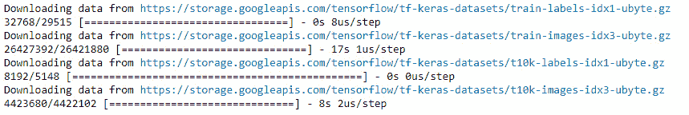图7.36:从MNIST生成图像
- Now, let's visualize the images with
matplotlib:# for j in range(5*5): pyplot.subplot(5,5,j+1) # turn off axis pyplot.axis('off') pyplot.imshow(fashionData[j,:,:,0],cmap='gray_r')您应该会得到类似如下所示的输出:
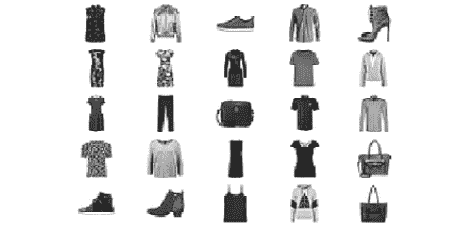图7.37:绘制的图像
从输出中，我们可以看到几个时尚文章的可视化。我们可以看到图像位于白色背景的中央。这是我们试图重现的画面。
- Now, let's define the function to generate inputs for the generator network. The inputs are random data points that are generated from a random uniform distribution:
# Function to generate inputs for generator function def fakeInputs(batch,infeats): # Generate random noise data with shape (batch,input features) x_fake = np.random.uniform(-1,1,size=[batch,infeats]) return x_fake该函数生成从随机分布中采样的假数据作为输出。
- Let's define the function for building the generator network:
Activity7.01.ipynb # Function for the generator model def genModel(infeats): # Defining the Generator model Genmodel = Sequential() Genmodel.add(Dense(512,input_dim=infeats)) Genmodel.add(Activation('relu')) Genmodel.add(BatchNormalization()) # second layer of FC => RElu => BN layers Genmodel.add(Dense(7*7*64)) Genmodel.add(Activation('relu')) Genmodel.add(BatchNormalization()) The complete code for this step can be found at https://packt.live/3fpobDm
构建发电机网络类似于构建任何CNN网络。在这个生成器网络中，我们将使用转置卷积方法对图像进行上采样。在这个模型中，我们可以看到转置卷积的逐步使用。初始输入从维度100开始，这是我们的输入特性。MNIST数据集的维度是批量大小x 28 x 28。因此，我们对数据进行了两次上采样，以获得批量大小为x 28 x 28的输出。
- Next, we define the function that will be used to create fake samples:
# Function to create fake samples using the generator model def fakedataGenerator(Genmodel,batch,infeats): # first generate the inputs to the model genInputs = fakeInputs(batch,infeats) """ use these inputs inside the generator model \ to generate fake distribution """ X_fake = Genmodel.predict(genInputs) return X_fake在这个函数中，我们只返回
X变量。这个函数的输出是假数据集。 - Define the parameters that we will use in many of the functions, along with the summary of the generator network:
# Define the arguments like batch size and input feature batch = 128 infeats = 100 Genmodel = genModel(infeats,) Genmodel.summary()
您应该得到以下输出:
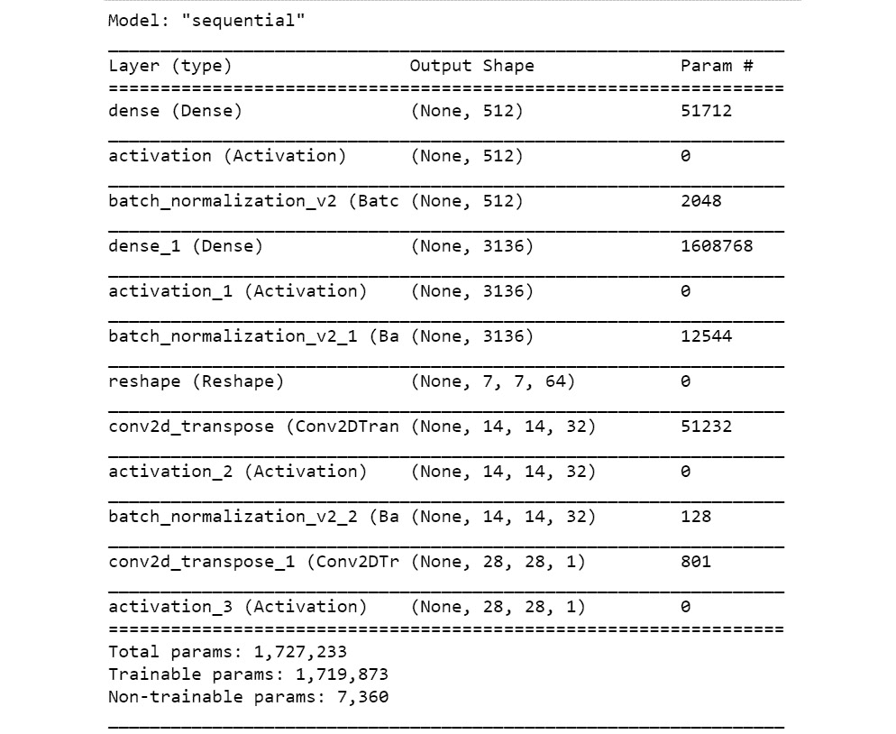图7.38:创成式模型概述
根据总结，请注意输入噪声的维度如何随着每个转置卷积运算而变化。最后，我们得到一个在维数上与真实数据集相等的输出，
( None,28 ,28,1)。 - Let's use the generator function to generate a fake sample before training:
# Generating a fake sample and printing the shape fake = fakedataGenerator(Genmodel,batch,infeats) fake.shape
您应该得到以下输出:
(128, 28, 28, 1)
- Now, let's plot the generated fake sample:
# Plotting the fake sample plt.imshow(fake[1, :, :, 0], cmap='gray_r')
您应该会得到类似如下的输出:
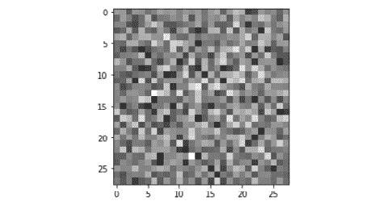图7.39:假样本的输出
这是训练前假样本的情节。训练后，我们希望像这样的样本看起来像我们在本活动中早些时候可视化的MNIST时装样本。
- Build the discriminator model as a function. The network architecture will be similar to a CNN architecture:
Activity7.01.ipynb # Descriminator model as a function def discModel(): Discmodel = Sequential() Discmodel.add(Conv2D(32,kernel_size=(5,5),strides=(2,2),\ padding='same',input_shape=(28,28,1))) Discmodel.add(LeakyReLU(0.2)) # second layer of convolutions Discmodel.add(Conv2D(64, kernel_size=(5,5), strides=(2, 2), \ padding='same')) Discmodel.add(LeakyReLU(0.2)) The full code for this step can be found at https://packt.live/3fpobDm在鉴别器网络中，我们已经包括了所有必要的层，例如卷积运算和
LeakyReLU。请注意，最后一层是sigmoid层，因为我们希望输出样本是真实(1)还是虚假(0)的概率。 - Print the summary of the discriminator network:
# Print the summary of the discriminator model Discmodel = discModel() Discmodel.summary()
您应该得到以下输出:
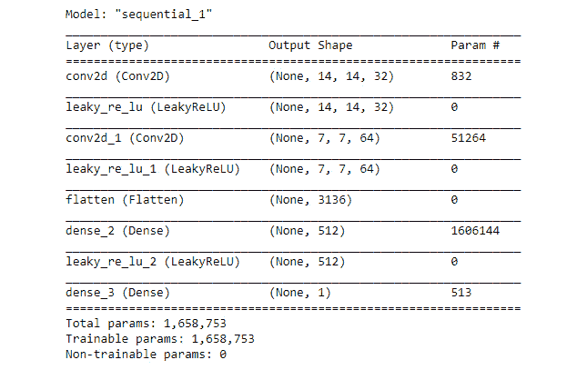图7.40:鉴别器模型总结
- Define the GAN model as a function:
# Define the combined generator and discriminator model, for updating the generator def ganModel(Genmodel,Discmodel): # First define that discriminator model cannot be trained Discmodel.trainable = False Ganmodel = Sequential() # First adding the generator model Ganmodel.add(Genmodel) """ Next adding the discriminator model without training the parameters """ Ganmodel.add(Discmodel) """ Compile the model for loss to optimise the Generator model """ Ganmodel.compile(loss='binary_crossentropy',\ optimizer = 'adam') return GanmodelGAN模型的结构类似于我们在练习7.05 、中开发的实现DCGAN 的模型。
- Now, it's time to invoke the GAN function:
# Initialise the GAN model gan_model = ganModel(Genmodel,Discmodel) # Print summary of the GAN model gan_model.summary()
请注意，GAN模型的输入是之前定义的发电机模型和鉴别器模型。您应该得到以下输出:
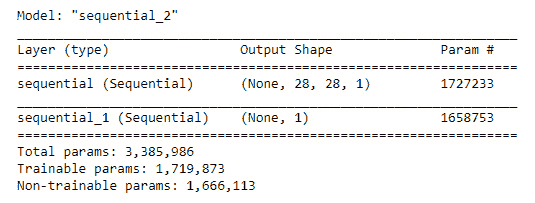图7.41: GAN模型总结
请注意，GAN模型各层的参数与发生器和鉴别器模型的参数是等效的。GAN模型只是我们之前定义的两个模型的包装。
- 使用以下代码定义训练网络的时期数:
# Defining the number of epochs nEpochs = 5000
- Now, we can start the process of training the network:
Activity7.01.ipynb # Train the GAN network for i in range(nEpochs): """ Generate samples equal to the batch size from the real distribution """ x_real = realData(batch) #Generate fake samples using the fake data generator function x_fake = fakedataGenerator(Genmodel,batch,infeats) # Concatenating the real and fake data X = np.concatenate([x_real,x_fake]) #Creating the dependent variable and initializing them as '0' Y = np.zeros(batch * 2) The complete code for this step can be found on https://packt.live/3fpobDm这里需要注意的是，用假样本和真样本训练鉴别器模型以及训练GAN模型是同时发生的。唯一的区别是GAN模型的训练在没有更新鉴别器模型的参数的情况下进行。另一点需要注意的是，在GAN内部，伪样本的标签将为1，从而产生大量损耗项，这些损耗项将通过鉴频器网络反向传播，以更新发生器参数。我们还显示了每50个时期GAN的预测概率。在计算概率时，我们将真实数据样本和虚假数据样本结合起来，然后取预测概率的平均值。我们还保存了生成图像的副本。
您应该会得到类似如下的输出:
Discriminator probability:0.5276428461074829 Discriminator probability:0.5038391351699829 Discriminator probability:0.47621315717697144 Discriminator probability:0.48467564582824707 Discriminator probability:0.5270703434944153 Discriminator probability:0.5247280597686768 Discriminator probability:0.5282968282699585
让我们看看在不同时期从训练过程中产生的一些图:
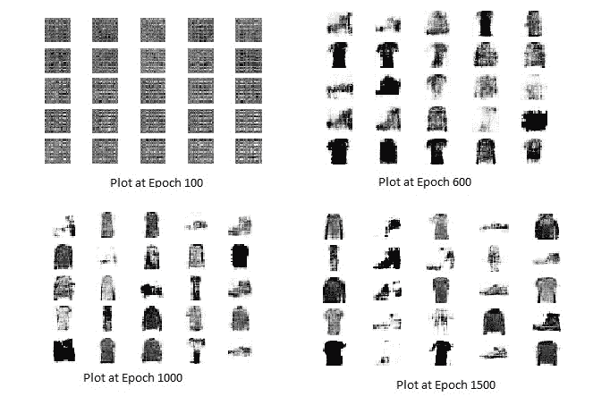图7.42:训练过程中生成的图像
从前面的图中，我们可以看到训练过程的进展。我们可以看到，到了公元100年，这些图大部分都是噪声。到了公元600年，时尚物品的形式开始变得更加明显。在1，500年，我们可以看到假图像看起来非常类似于时尚数据集。
注意:
你可以去https://packt.live/2W1FjaI仔细看看这些图片。
- Now, let's look at the images that were generated after training:
# Images generated after training x_fake = fakedataGenerator(Genmodel,25,infeats) # Displaying the plots for j in range(5*5): pyplot.subplot(5,5,j+1) # turn off axis pyplot.axis('off') pyplot.imshow(x_fake[j,:,:,0],cmap='gray_r')您应该会得到类似如下的输出:
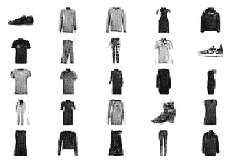
图7.43:训练过程后生成的图像
从训练精度级别中，您可以看到鉴别器模型的精度徘徊在. 50范围附近，这是所需的范围。发生器的目的是创建看起来像真图像的假图像。当生成器生成看起来与真实图像非常相似的图像时，鉴别器会弄不清该图像是从真实分布还是伪分布生成的。这种现象表现在鉴频器的精度水平约为50%,这是所希望的水平。
注意
要访问该特定部分的源代码，请参考https://packt.live/3fpobDm的。
本节目前没有在线交互示例，需要在本地运行。